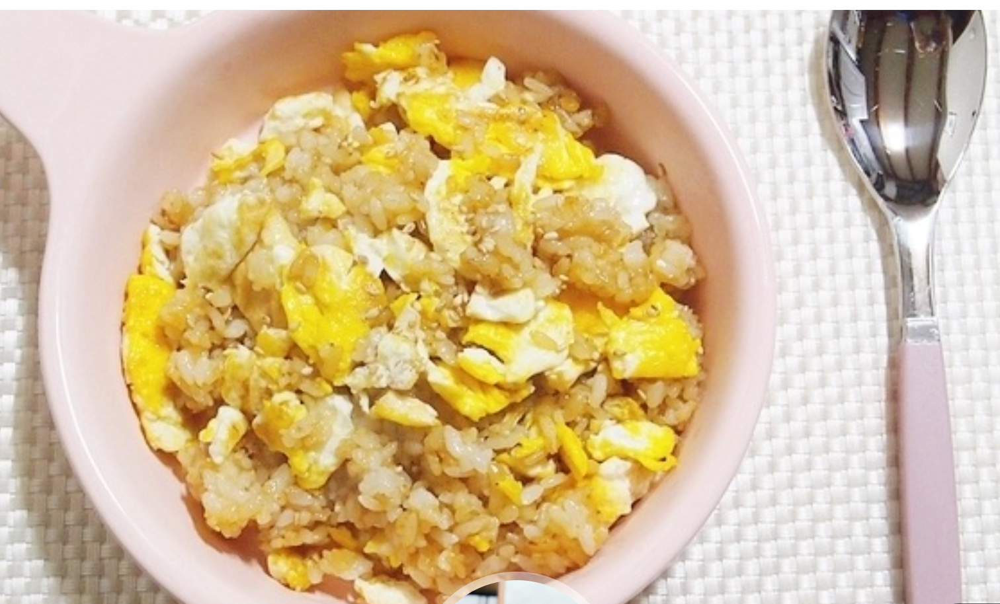

맛도리 간계밥
재료
조리 순서
간장과 계란을 밥에 섞어 먹는
간단 완성 요리
입니다. 참기름을 넣으면
고소한 맛
을 낼 수있습니다.

▲간장 계란밥
재료
계란 1개
간장 20ml
밥 400g
참기름
조리순서
1. 계란을 후라이팬으로 굽는다.
2. 밥 위에 얹어 간장20ml를 붙는다.
3. 참기름을 넣어준다.
4. 섞어서 완성한다
← 목록으로 돌아가기
레시피 출처
맨 위로 ↑